By: Team CS2103T-T13-4 Since: Sept 2019 Licence: MIT
1. Introduction
Mark is for those who prefer to use a desktop application for managing bookmarks. More importantly, it is optimized for those who prefer to work with a Command Line Interface (CLI) while still having the benefits of a Graphical User Interface (GUI). If you can type fast, Mark can get your bookmark organisation and note-taking done faster than traditional GUI apps. Interested? Move on to Section 2, “Quick Start” to get started. Enjoy!
2. Quick Start
2.1. Installing Mark
Here are a few steps to get you started on Mark:
-
Ensure you have Java
11or above installed in your Computer. -
Download the latest
mark.jarhere. -
Copy the file to the folder you want to use as the home folder for your Mark.
-
Double-click the file to start the application. The GUI should appear in a few seconds.
 Figure 1. GUI for Mark
Figure 1. GUI for Mark -
Type the command in the command box and press Enter to execute it.
e.g. typinghelpand pressing Enter will open the help window.Here are some example commands that you can try:
-
list: lists all bookmarks -
folder Tutorials: creates a folder namedTutorials -
add u/https://git-scm.com/book/en/v2 n/Pro Git f/Tutorials: adds a bookmark namedPro Gitto Mark -
delete 3: deletes the 3rd bookmark shown in the current bookmark list -
exit: exits the application
-
-
Refer to Section 3, “Features” for details of each command.
2.2. Using Mark
This section offers an overview of Mark’s layout so that you can locate information more easily.
There are three main areas in Mark:
-
A command box and result display box at the top of the screen
-
A bookmark list on the left of the screen
-
A main viewing area that occupies most of the right side of the screen
The command box is the area for you to enter commands. The result of each command will be shown in the result display box, immediately below the command box.
The bookmark list shows details about the bookmarks in Mark.
The main viewing area shows one of three available tabs at any point in time. Mark has three tabs: Dashboard, Online and Offline.
-
The Dashboard tab contains information about reminders, favorite bookmarks, folders, and autotags in Mark.
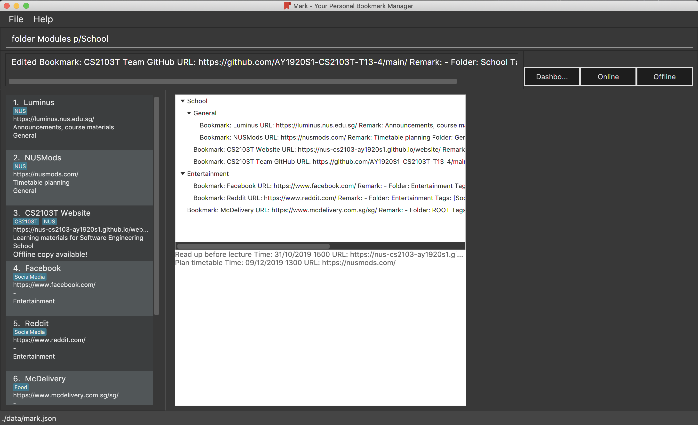Figure 4. Mark’s Dashboard tab -
The Online tab contains a web browser, which you can use to search for and view web pages.
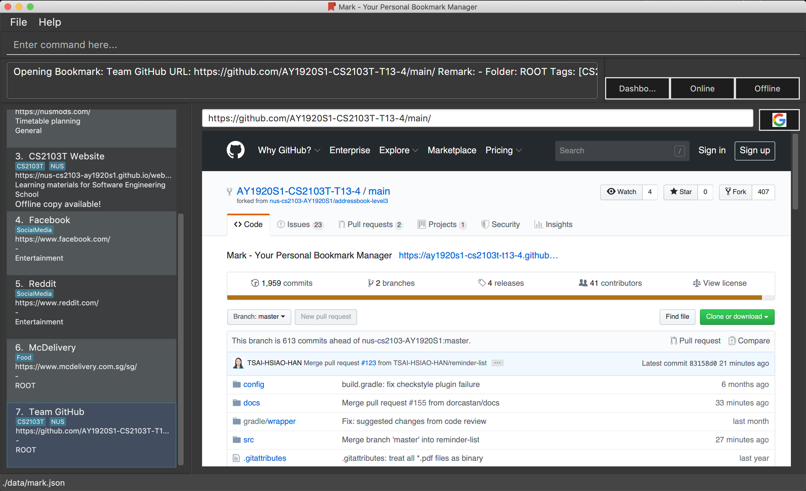Figure 5. Mark’s Online tab -
The Offline tab displays the most recently opened offline copy of bookmarked web pages, which you can browse and annotate directly.
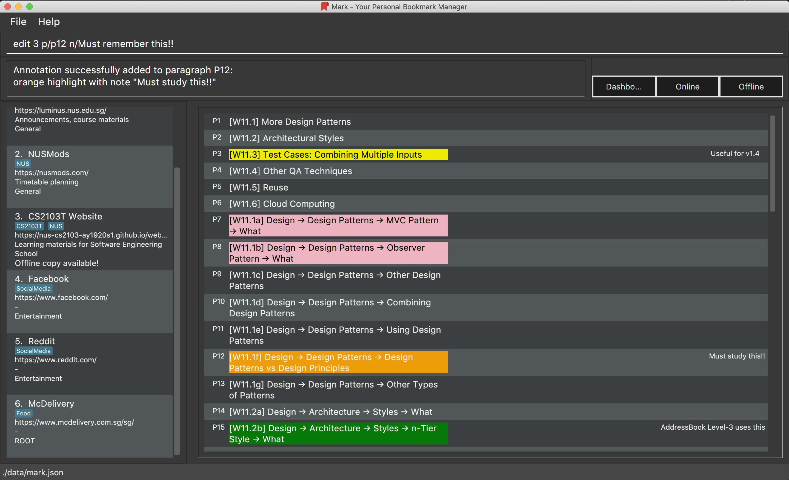Figure 6. Mark’s Offline tab
3. Features
This section describes the main features of Mark and how to use them.
The features are grouped into six categories:
Additionally, the upcoming features section offers a preview of what you can expect in Mark v2.0.
Command Format
This document uses the following notation to describe command formats:
-
Words in
UPPER_CASEare the parameters to be supplied by the user.
E.g. In the command formatadd u/URL,URLis a parameter which can be used asadd u/https://luminus.nus.edu.sg. -
Items in square brackets are optional.
E.gu/URL [t/TAG]can be used asu/https://luminus.nus.edu.sg t/NUSor asu/https://luminus.nus.edu.sg. -
Default values for optional items are specified with an
=symbol.
E.g. Whenu/URL [t/TAG=CS2103T]is specified in the command format, the default value for the tag isCS2103Tif not it is not provided. -
Items with
… after them can be used multiple times, including zero times.
E.g.[t/TAG]…can be used ast/module,t/module t/read-lateretc. -
Parameters can be used in any order unless otherwise specified.
E.g. if the command specifiesu/URL n/NAME,n/NAME u/URLis also acceptable.
3.1. General
The following commands carry out general operations in Mark.
3.1.2. Switching tabs: tab
Switches the current app view to the tab that corresponds to the given
index. For your convenience, you can use keywords dash, on or off instead of an index.
Format: tab INDEX or tab KEYWORD
Examples:
-
tab 1
Goes to the Dashboard tab. -
tab on
Goes to the Online tab which is a web view. -
tab 3
Goes to the Offline tab which shows the offline copy of bookmarks.
3.1.3. Undoing previous commands: undo
If you mistakenly enter a command that permanently changes Mark, do not worry, you can always use undo to
rectify the mistake! This command restores Mark to the state before the given number of previous undoable commands were
executed.
Format: undo [STEP=1]
For example:
-
When you accidentally delete a wrong bookmark and you want to bring it back. There is no need for you to manually add that bookmark back as
undowill do the magic for you. Just inputundoin the command box, the deleted bookmark will reappear in your bookmark list. -
Suppose you have entered two
deletecommands,delete 1anddelete 2, and now you want to get back both bookmarks, a possible way is enterundotwice. Besides, Mark also offers an alternative where you can just typeundo 2to undo these two commands.
Parameter constraints:
3.1.4. Redoing previously undone commands: redo
This command reverses the given number of undone actions.
Format: redo [STEP=1]
Examples:
-
redo
Reverses the most recentundocommand. -
delete 1
delete 2
undo 2
redo 2
Restores the bookmark list to the state before theundo 2command was executed. The two bookmarks get deleted again.
Parameter constraints:
3.1.5. Exporting bookmarks: export
This command exports Mark data to a specified file on the hard disk. The saved file is
identical in format to the data file mark.json and can be used to save back-up copies
of Mark data.
Note that Mark data are automatically saved in the hard disk after any command that changes the data, so if you do not need outdated Mark data, there is no need to save manually.
Format: export [FILENAME]
Example:
-
export myBookmarks
Exports all bookmark manager data to a file namedmark/data/bookmarks/myBookmarks.json(assumingmark.jaris stored in the foldermark). The content ofmyBookmarks.jsonis identical to the current content ofmark.json.
3.1.6. Importing bookmarks: import
This command imports bookmarks from a file on the hard disk to Mark. A bookmark is, by default, imported
into a folder with the same name as its original folder (even if the folder
structure is different). If no such folder is found, the bookmark will be imported
into the folder ImportedBookmarks.
Bookmarks with the same name or URL as existing bookmarks are not imported.
Format: import FILENAME
Example:
-
import myBookmarks
Assumingmark.jaris stored in the foldermark, imports bookmarks from the filemark/data/bookmarks/myBookmarks.json.
3.1.7. Clearing all data: clear
Clears all data from Mark. All bookmarks, folders, autotags, and reminders will be cleared.
Format: clear
3.2. Bookmarks
The following commands operate on bookmarks in Mark. Apart from the list and find command,
all other bookmark-related commands operate on bookmarks using the bookmark index that is
currently shown in the bookmark list.
3.2.1. Showing all bookmarks: list
Shows a list of all bookmarks in the bookmark manager.
Format: list
3.2.2. Locating bookmarks by name, URL, tag or folder: find
Finds bookmarks that contain any of the given keywords in their name or URL, or that are tagged with the given tag(s) or stored under the given folder(s).
Format: find [KEYWORD]… [t/TAG]… [f/FOLDER]…
Examples:
-
find Website Video t/Fun
Returns all the bookmarks with CS2103T or Video in its name or URL, and all bookmarks tagged with Fun. -
find CS2103T CS2101 CS2105
Returns any bookmark with CS2103T, CS2101, or CS2105 in its name or in its URL. -
find GitHub t/School f/CS2103T
Returns any bookmark with the tag School or folder CS2103T or that contains github in either name or URL.
3.2.3. Opening a bookmark: goto
This command opens the specified the bookmark from the bookmark manager.
Format: goto INDEX
For example:
-
list
goto 1
Opens the first bookmark in the bookmark manager.
Parameter constraints:
3.2.4. Adding a bookmark: add
If you’re browsing the web and want to bookmark a website, you can do so using the add command.
You can also use add to bookmark web pages using their URLs.
Format: add u/URL n/NAME [r/REMARK=-] [f/FOLDER=ROOT] [t/TAG]…
For example:
-
While surfing the Internet in Mark, input
add u/this n/Homepageinto the command box.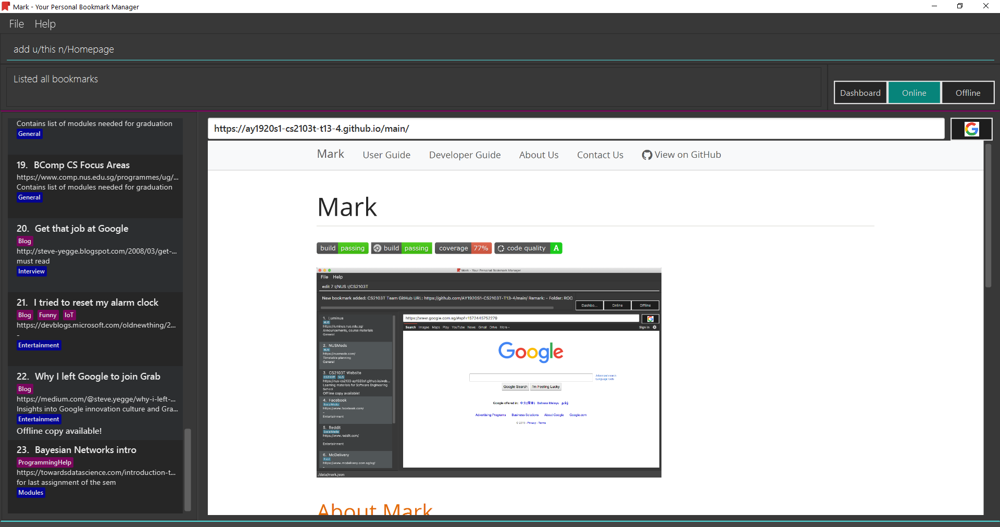 -
You can then check that a bookmark of the current page has been added and is visible in the bookmark list. The new bookmark has the name
Homepage. Since the folder and remark are not specified, it is added to the root folder and has the default remark "-".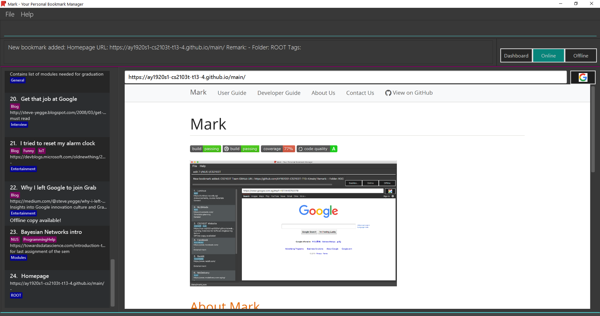
Parameter constraints:
Other examples:
-
add u/https://nus-cs2103-ay1920s1.github.io/website/ n/Module Website f/CS2103T r/Contains textbook & important deadlines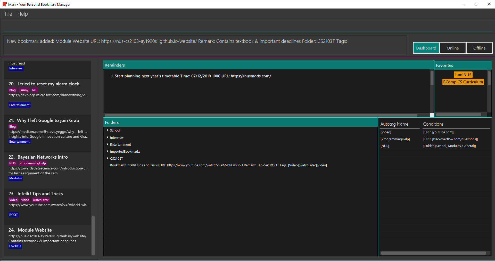Bookmarks the given website, names it
Module Website, and adds it to the folderCS2103T. The new bookmark’s remark isContains textbook & important deadlines, as seen above. -
add u/https://www.youtube.com/watch?v=9AMcN-wkspU n/IntelliJ Tips and Tricks t/video t/watchLater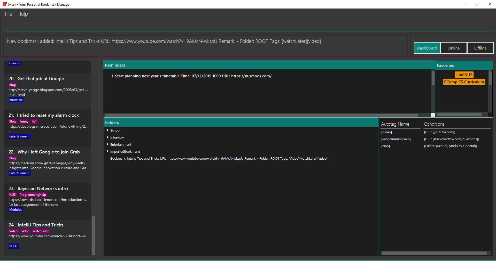Bookmarks the given website, names it
IntelliJ Tips and Tricks. The new bookmark’s tags includevideoandwatchLater.
3.2.5. Editing a bookmark: edit
Edits an existing bookmark in the bookmark manager.
Format: edit INDEX [u/URL] [n/NAME] [r/REMARK] [f/FOLDER] [t/TAG]…
Examples:
-
edit 1 n/CS2103T Website f/AY1920S1
Edits the name and folder of the 1st bookmark to be CS2103T Website and AY1920S1 respectively. -
edit 2 t/
Clears all existing tags from the 2nd bookmark.
3.2.6. Deleting a bookmark: delete
Deletes the specified bookmark from the bookmark manager.
Format: delete INDEX
Examples:
-
list
delete 2
Deletes the 2nd bookmark in the bookmark manager. -
find luminus
delete 1
Deletes the 1st bookmark in the results of the find command.
3.2.7. Adding a bookmark to Favorites: favorite|fav
This command adds a Favorite tag to the specified bookmark.
Format: favorite|fav INDEX
Parameter constraints:
Examples:
-
favorite 1
Adds a Favorite tag to the first bookmark in the bookmark manager. -
fav 2
Adds a Favorite tag to the second bookmark in the bookmark manager.
3.3. Folders
The following commands carry out operations on folders in Mark. The results of these operations can be viewed in the folder hierarchy of dashboard tab.
|
The bookmarks that are displayed in the folder hierarchy correspond to the bookmarks in the bookmarks list on the left. For example, if you have have just performed a find command and the bookmark list shrinks from 100 entries to just 10, the folder hierarchy will also
shrink from showing 100 bookmarks to 10.
|
You can use the list command to see all your bookmarks in the folder hierarchy.
|
3.3.1. Expanding the folder hierarchy: expand
If you want to expand all unexpanded folders, use this command.
Format: expand [LEVEL=1]
For example:
-
You want to expand all unexpanded folders by one level with just one command. Type
expandin the command box and hit Enter.
-
You see all folders expanded by one level.

Other examples:
-
expand 3
Expands the folder hierarchy by 3 levels.
3.3.2. Collapsing the folder hierarchy: collapse
If you have too many expanded folders and want to collapse them, use this command.
Format: collapse [LEVEL=1]
For example:
-
You want to collapse the deepest expanded folders by one level with just one command. Type
collapsein the command box and hit Enter.
-
You see the deepest expanded folders collapsed by one level.

Other xamples:
-
collapse 9999
Collapses the folder hierarchy by 9999 levels, most likely collapsing them all the way.
3.3.3. Adding a folder: folder
When your bookmark list is getting too long, you may want to use this command to create new folders to organize bookmarks into.
Format: folder FOLDER_NAME [p/PARENT_FOLDER=ROOT]
For example:
-
You notice you have 20 bookmarks all related to CS2103T. You decide to create a folder for them, so you enter the command
folder CS2103Tand hit Enter.
-
You see a new empty folder
CS2103Tappear in the dashboard.
Other examples:
-
folder CS2103 p/NUS
Creates a new folder namedCS2103under the parent folderNUS.
3.3.4. Editing a folder: folder-edit
If your favorite band recently changed its name, you may want to edit your folder for it to reflect its new name. You can do so with this command.
Format: folder-edit FROM_FOLDER_NAME t/TO_FOLDER_NAME
For example:
-
You recently broke up, and want to edit the folder
Dearcontaining all your previous memories toEx. So you enter the commandfolder-edit Dear t/Exand hit Enter.
-
You see folder
Dearrenamed toEx. All your bookmarks previously in the folderDearhave also been edited to now be in the folderEx.
3.3.5. Deleting a folder: folder-delete
If you have an unused folder you wish to delete, this is the command you should use.
Format: folder-delete FOLDER_NAME
For example:
-
You see an unused folder
CS2101in the Dashboard, and inputfolder-delete CS2101into the command box.
-
You no longer see folder
CS2101appear in the folders section of the Dashboard.
3.4. Autotags
Autotags are tags that will be automatically applied to bookmarks which match their respective autotag conditions. You can view the details of existing autotags in the autotag panel at the bottom-right of the Dashboard tab, as seen below.
The commands in this section provide a way to add and remove autotags in Mark.
3.4.1. Creating an automatic tag: autotag
If you are looking to tag a group of similar bookmarks without manually editing each one, you
can use the autotag command to create an autotag that will do that for you. You can define
the group of bookmarks to be tagged using conditions, which describe the key characteristics
of those bookmarks.
| Conditions fall into two categories: normal conditions, which are characteristics that bookmarks to be tagged should match, and not-conditions, which are conditions that bookmarks should not match. |
You can specify conditions relating to the name, URL, and/or folder (also known as attributes) of a bookmark. It is also possible not to specify any condition for an attribute if the attribute is not relevant. However, an autotag must have at least one condition specified; otherwise, it would automatically tag all your bookmarks!
Format: autotag TAG_NAME [n/NAME_KEYWORD]… [u/URL_KEYWORD]… [f/FOLDER]…
[nn/NOT_NAME_KEYWORD]… [nu/NOT_URL_KEYWORD]… [nf/NOT_FOLDER]…
For example:
-
To add a new autotag, input
autotag NUS n/NUS n/School n/Uniinto the command box.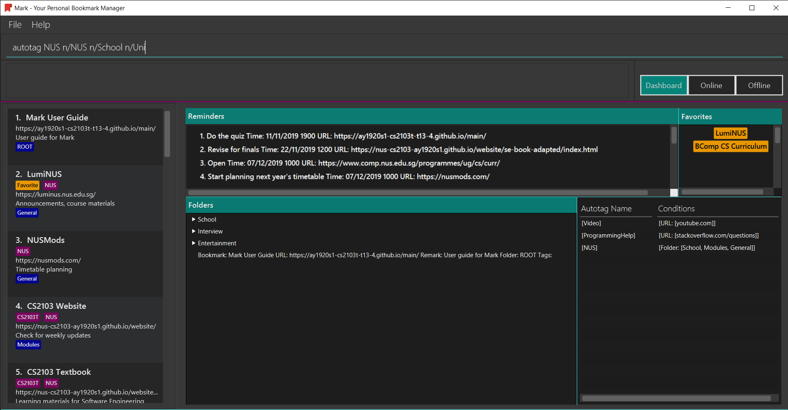 -
You can then check that an autotag named
NUSwith three name conditions (NUS,School, andUni) has been added to the autotag panel of the Dashboard. Also, notice that bookmarks with names that containNUS,SchoolorUninow have the tagNUS.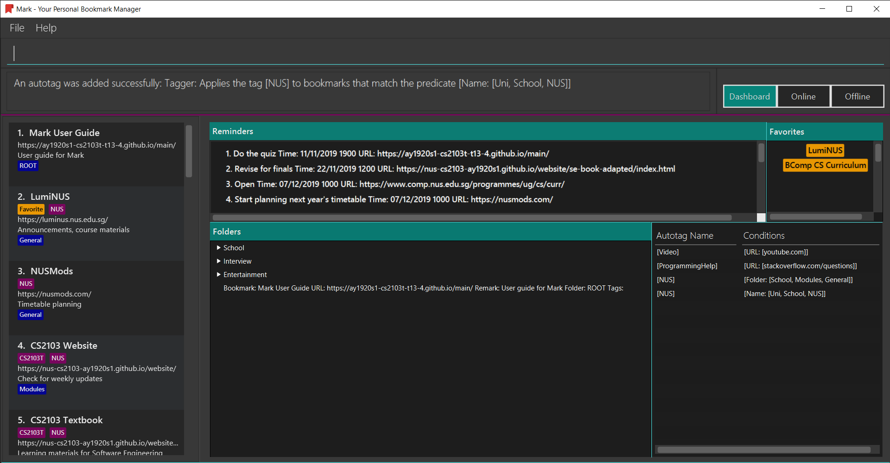
There are several restrictions on the usage of command parameters:
If an autotag’s conditions contradict each other, no bookmarks will be tagged.
E.g. an autotag with conditions u/github.com/mark nu/github.com/ effectively does nothing as no
bookmark can have a URL containing github.com/mark and not github.com.
|
|
If multiple conditions are specified, bookmarks are matched in the following way:
* For normal conditions ( |
Other examples:
-
autotag LumiNUS u/luminus.nus.edu.sg nf/Miscellaneous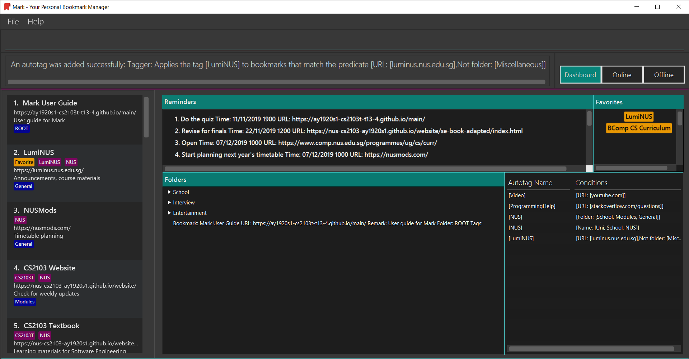Creates an autotag named
LumiNUSwhich tags all bookmarks with URLs containingluminus.nus.edu.sgthat are not in the folderMiscellaneous. -
autotag Quiz f/NUS f/Module nu/github nu/stackoverflow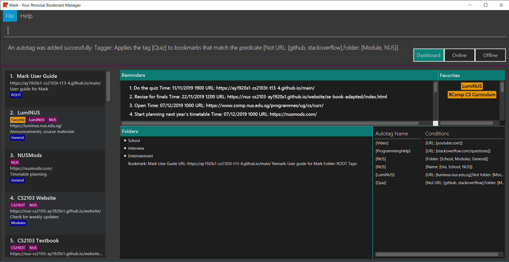Creates an autotag named
Quizwhich tags all bookmarks that are either in the folderNUSor in the folderModule, and that do not contain any of the keywordsgithuborstackoverflowin their URLs.
3.4.2. Editing an automatic tag: autotag-edit
If you want to modify an autotag, you can use the autotag-edit command to edit the autotag’s
name and/or conditions.
This is essentially a shortcut for autotag-delete followed by autotag-add.
|
Format: autotag-edit TAG_NAME [t/NEW_TAG_NAME] [n/NAME_KEYWORD]… [u/URL_KEYWORD]… [f/FOLDER]…
[nn/NOT_NAME_KEYWORD]… [nu/NOT_URL_KEYWORD]… [nf/NOT_FOLDER]…
For example:
-
To modify the autotag named
NUS, typeautotag-edit NUS t/University f/School f/General f/Modules f/CS2103T
-
You can then observe that the autotag
NUShas been renamedUniversity, and its folder conditions now include the folderCS2103T.
The parameter constraints are similar to those for the autotag command,
with the following differences:
Other examples:
-
autotag-edit Quiz u/luminus.nus.edu.sg u/quiz nu/attempt
Modifies the autotag
Quizsuch that it tags bookmarks with URLs that contain either of the keywordsluminus.nus.edu.sgorquiz, but do not contain the keywordattempt. -
autotag-edit Quiz t/Quizzes
Modifies the name of the autotag
Quizsuch that it now tags bookmarks with the tagQuizzesinstead ofQuiz.
3.4.3. Deleting an automatic tag: autotag-delete
If you no longer need an autotag, you can delete it from Mark using the autotag-delete
command. None of your existing tags are affected when an autotag is deleted.
Format: autotag-delete TAG_NAME
For example:
-
If you want to delete the autotag
NUS, inputautotag-delete NUSinto the command box.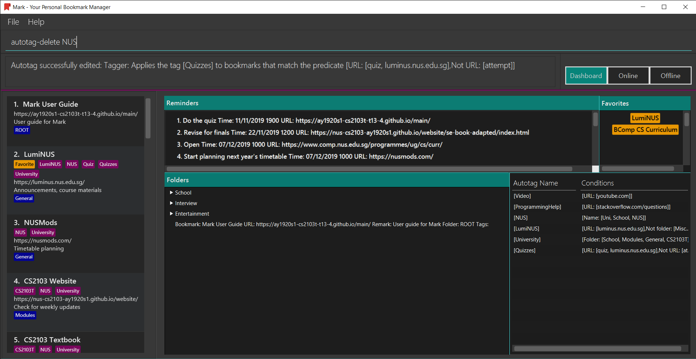 -
You can then check that the autotag named
NUShas been deleted from the autotag panel of the Dashboard. In addition, no bookmarks have been modified.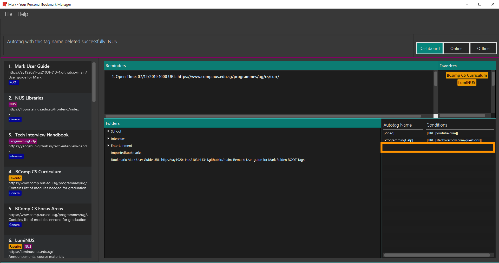
Parameter constraints:
Example:
-
autotag-delete Quiz
Deletes the autotag that would have tagged bookmarks that match its conditions with the tagQuiz. No existing tags are removed, but new and edited bookmarks will no longer be automatically tagged withQuiz.
3.5. Offline Copies
The following commands carry out operations relating to offline copies of bookmarked web pages.
3.5.1. Saving an offline copy: cache
Saves the bookmarked website locally for offline viewing.
Format: cache INDEX
Examples:
-
cache 1
Saves an offline copy of the first bookmark.
3.5.2. Deleting an offline copy: cache-delete
Deletes an offline copy of a bookmark.
Format: cache-delete INDEX
Examples:
-
cache-delete 2
Deletes the offline copy of the second bookmark.
3.5.3. Viewing an offline copy: offline
If you want to view the offline copy of a bookmark, you can do so using the offline command. Your view will be switched
to the offline tab where the offline copy is shown.
Format: offline INDEX
Examples:
-
offline 1
Shows annotated offline copy of bookmark 1.
3.5.4. Making annotations on an offline copy: annotate
If you want to add a new annotation on the offline copy of a bookmark,
you can do so using the annotate command.
With this command, you can highlight a paragraph on the offline document and
optionally attach a supplementary note to said paragraph. You can add notes
to justify the highlight or as content-relevant notes to refer to in future.
If you are looking to add a general note not pertaining to any specific paragraph, you can also use this command to add it to the bottom of the page, hereby known as the General notes section.
Upon annotating, the your view will be switched to the offline tab showing the results of your command.
| A general note is not attached to any paragraph of the original web page. Instead, when adding general notes, they are attached to newly created paragraphs that do not have any content displayed. General notes are found at the bottom of the page, referred to as the General notes section. |
You can choose to use this command to overwrite any existing note. However, note that when you use this command to highlight the paragraph of a general note, Mark remembers the hidden highlight colour, but no highlight is reflected on the application.
Paragraphs are identified using a numbered identifier that starts with either P or G. You can refer to the
numbered identifier in the leftmost column of the offline document to check out the respective identifier for each paragraph.
Paragraphs of general notes are identified using numbered identifiers that begin with G, as opposed to paragraphs originating from the original web page, whose identifiers begin with P.
|
Format: annotate INDEX p/PARA_NUM [n/NOTES] [h/HIGHLIGHT_COLOUR=yellow]
For example:
-
Input
annotate 1 p/p2 n/summary of paragraph h/orangeinto the command box.

-
Observe that any pre-existing annotation is overwritten. Paragraph P2 is now highlighted orange and a note with content “summary of paragraph” is attached to it.

Other examples:
-
annotate 1 p/p2
This highlights paragraph P2 yellow in the offline copy of bookmark 1. -
annotate 1 p/p2 h/pink
This overwrites any existing highlight of paragraph P2 with pink in the offline copy of bookmark 1. Any notes attached remain attached. -
annotate 1 p/p2 n/change or add note content
This overwrites any note attached to paragraph P2 to a note with content “change or add note content” in the offline copy of bookmark 1. Highlight colour remains the same. Otherwise, paragraph P2 will be highlighted yellow and a new note with content "change or add note content" will be added to the paragraph. -
annotate 1 p/null n/adding a general note
This adds a note with content "adding a general note" to the General notes section in the offline copy of bookmark 1.
3.5.5. Modifying annotations on an offline copy: annotate-edit
If you want to modify existing annotations on the offline copy of a bookmark, you can do so using the annotate-edit command.
You can choose to overwrite the existing note of a particular paragraph with another note, change the highlight or
choose to move notes from a paragraph to another paragraph. You can also use this command to move a general note to the main text by specifying which original paragraph to move it to.
While both annotate-edit and annotate can be used to change current annotation highlight and notes, annotate-edit
allows you to shift your annotations from one paragraph to another in a single step.
|
Moving of notes to the General notes section is not supported. If you really want to shift them,
use annotate-delete with n/true as the only optional flag you include.
Upon editing an annotation, your view will be switched to the offline tab showing the results of your command.
Format: annotate-edit INDEX p/PARA_NUM [to/NEW_PARA_NUM] [n/NOTES] [h/HIGHLIGHT_COLOUR]
For example:
-
Input
annotate-edit 1 p/g1 to/p1 h/greeninto the command box.

-
Observe that the general note removed from the bottom and attached to pararaph P1. At the same time, paragraph P1 is highlighted green.

Other examples:
-
annotate-edit 1 p/p2 to/p3
This moves both the highlight and notes from paragraph P2 to paragraph P3 in the offline copy of bookmark 1. The highlight of paragraph P2 is removed. -
annotate-edit 1 p/p2 to/p3 h/orange
This moves the note from paragraph P2 to paragraph P3 in the offline copy of bookmark 1. The highlight of paragraph P2 is removed and paragraph P3 is highlighted with orange. -
annotate-edit 1 p/p1 n/new notes
This replaces the content of the note for paragraph P1 with "new notes" in the offline copy of bookmark 1. -
annotate-edit 1 p/p1 h/yellow
This changes the highlight colour to yellow for paragraph P1 in the offline copy of bookmark 1. -
annotate-edit 1 p/g2 to/p1
This moves the general note G2 to paragraph P1 in the offline copy of bookmark 1. -
annotate-edit 1 p/p2 to/p3 n/changing and moving notes
This annotates paragraph P3 with the highlight of paragraph 2 and a note with content "changing and moving notes". The annotation on paragraph P2 is removed.
3.5.6. Deleting annotations on an offline copy: annotate-delete
If you want to delete highlights or notes from the offline copy of a bookmark, you can do so using the annotate-delete command.
You can choose to remove just the notes and/or highlight of a paragraph, or clear all annotations
on the offline copy to revert it to a clean slate. You can also choose to remove a note from the
General notes section.
If the given paragraph does not have any annotations to remove, nothing is performed. Also, you cannot choose to remove only the highlight from the paragraph of a general note since it does not display a highlight in the first place.
Upon deleting an annotation, your view will be switched to the offline tab showing the results of your command.
Format: annotate-delete INDEX p/PARA_NUM [n/KEEP_NOTES=false] [h/KEEP_HIGHLIGHT=false]
For example:
-
Input
annotate-delete 1 p/p2 n/trueinto the command box.

-
Observe that the highlight of paragraph P2 if removed and the note is moved to the General notes section.

Other examples:
-
annotate-delete 1 p/p2
This removes both the note and highlight from paragraph P2 in the offline copy of bookmark 1. -
annotate-delete 1 p/p2 h/true
This removes the note of paragraph P2 in the offline copy of bookmark 1, leaving the highlight untouched. -
annotate-delete 2 p/g1
This deletes the general note G1 in the offline copy of bookmark 2. -
annotate-delete 1 p/all
This removes all annotations of the offline copy of bookmark 1.
3.6. Reminders
The following commands carry out operations on reminders in Mark. You can find reminders on the Dashboard tab.
3.6.1. Adding a reminder: reminder
This command adds a reminder to a specified bookmark. The reminder will inform you at the time you indicate.
|
You can have at most one reminder for one bookmark. The reminder cannot set the reminding time in the past. Each reminder will reminds you with popup notification twice: The first notification will show when the reminding time is within five hours, the second time is on the reminding spot. The expired reminder will be auto delete after one hour. |
Format: reminder INDEX t/TIME_DATE [n/NOTE=Open]
For example:
You are using Mark, and you want to remind yourself to do the quiz on Luminus bookmark tomorrow night,
which is 18/11/2019 8p.m.
Now you can use the reminder command to add a reminder to Luminus.
To add a reminder:
-
The index of Luminus on reminder list is 1. You type the command
reminder 1 t/18/11/2019 2000 n/Do the quizinto the command box and press Enter to execute it.
-
The result box will show the message:
"New reminder added: Do the quiz Time: 10/11/2019 0700 URL:https://luminus.nus.edu.sg/"
-
The reminder is added to the reminder list.
-
The notification will show up to inform you at the time.
There are some parameter constraints:
Other examples:
-
reminder 1 t/02/07/2019 2359
This command line adds a reminder for bookmark 1, and sets the time of the reminder as 23:59 of 02/07/2019. It reminds you to open the bookmark. -
reminder 1 t/02/07/2019 2359 n/Read announcements
This command line adds a reminder for bookmark 1, and sets the time of the reminder as 23:59 of 02/07/2019. The reminder reminds you to read announcements.
3.6.2. Editing a reminder: reminder-edit
This command edits the reminder in the list at the specified index. You can edit either the time or the note of the reminder.
Format: reminder-edit INDEX [t/TIME_DATE] [n/NOTE]
For example:
You have another assignment on Luminus that need to be done tomorrow morning,
which is 10/11/2019 7 a.m. You want to change the note for reminder to remind you do the assignment.
Now you can use the reminder-edit command to edit the reminder for Luminus.
To edit a reminder:
-
The index of the reminder in the reminder list is 1. You type the command
reminder-edit 1 n/Do the quiz and the assignmentinto the command box and press Enter to execute it. image::ui-screenshots/EditReminderUi1.png[400, 500] -
The result box will show the message:
"Edited Reminder: Do the quiz and the assignment Time: 10/11/2019 0700 URL:https://luminus.nus.edu.sg/"
-
The reminder is edited in the reminder list.
-
The edited notification will show up to inform you at the time.
There are some parameter constraints:
Other examples:
-
reminder-edit 1 t/02/07/2019 2359
This command edits the reminder of index 1. Reset the time of the reminder to 23:59 of 02/07/2019. -
reminder-edit 1 t/02/07/2019 2359 n/Check daily news
This command edits the reminder of index 1. Reset the time of the reminder to 23:59 of 02/07/2019. Reset the note to Check daily news.
3.6.3. Deleting a reminder: reminder-delete
This command deletes the the reminder in the reminder list at the specified index.
Format: reminder-delete INDEX
For example:
You finished your task on Luminus early, and you do not need the reminder for Luminus anymore.
Now you can use the reminder-delete command to delete the reminder for Luminus.
To delete a reminder:
-
The index of the reminder in the reminder list is 1. You type the command
reminder-delete 1into the command box and press Enter to execute it.
-
The result box will show the message:
"Deleted Reminder: Do the quiz and the assignment Time: 10/11/2019 0700 URL:https://luminus.nus.edu.sg/"
-
The reminder is deleted in the reminder list.
Other examples:
-
reminder-delete 2
This command deletes the reminder of index 2.
3.6.4. Opening a bookmark from a reminder: reminder-goto
Opens the related bookmark of the specified reminder from the bookmark manager.
Format: reminder-goto INDEX
For example:
You want to plan your time table for next semester, which is a task on reminder list.
Now you can use the reminder-goto command to open the website.
To open the bookmark of a reminder:
-
The index of the reminder in the reminder list is 2. You type the command
reminder-goto 2into the command box and press Enter to execute it.
-
The result box will show the message:
"Opening Reminder: Start planning next year’s timetable Time: 07/12/2019 1000 URL:https://nusmods.com/"
-
The tab will switch to Online and show NUSMODs website.
Other examples:
-
reminder-goto 1
If reminder 1 points to bookmark 5, this command is equivalent togoto 5. (i.e. opens the 5th bookmark in the bookmark manager.)
3.7. Upcoming [coming in v2.0]
These features will be available in the next version of Mark.
3.7.1. Sorting bookmarks: sort [coming in v2.0]
Sorts the displayed bookmarks according to different criterion (name, order added) and displays them as a list.
Format: sort [CRITERION]
Examples:
-
sort name
Lists all the bookmarks based on name/alphabetical order. -
sort default
Sort all the bookmarks based on the order they were added.
3.7.2. Automatically completing partially typed commands [coming in v2.0]
Automatically fills in partially typed commands if the command is unique.
3.7.3. Sharing bookmarks and notes via Email/ Telegram [coming in v2.0]
Shares your bookmarks and notes with your friends via Email or Telegram.
4. FAQ
4.1. How do I transfer my data to another Computer?
Install the app in the other computer and overwrite the empty data file it creates with the file that contains the data of your previous Mark folder.
5. Glossary
This glossary aims to provide a definition for the special vocabulary used in this user guide.
- Annotation
-
A note or highlight that is made on an offline copy of a bookmark.
- Autotag
-
A tag that is automatically applied to bookmarks based on certain conditions. These conditions are specified when the autotag is created. Refer to Section 3.4.1, “Creating an automatic tag:
autotag” for details about how to use autotags. - Bookmark
-
A saved shortcut to a website. In Mark, a bookmark can contain other information besides the website URL, such as reminders, offline copies and annotations.
- Dashboard
-
The default tab in view when the application starts. The dashboard contains a help section (command summary), favorite tags, current reminders, and a view of the folder hierarchy for bookmarks.
- Folder Hierarchy
-
The structure of folders in Mark. This is displayed in the dashboard tab when the application starts.
- Reminder
-
The reminder in Mark reminds you to check a specific bookmark. This is displayed in the dashboard tab when the application starts.
- Offline copy
-
An copy of a bookmarked website that is used for offline viewing. It is stored as a HTML file on the computer.
- General notes
-
Annotation notes that are not attached to a paragraph from the corresponding web page are described to be general. General notes are found at the bottom of the rightmost column on the offline copy, known as the General notes section.
6. Command Summary
Category |
Commands |
General |
Help: |
Tab: |
|
Undo: |
|
Redo: |
|
Export: |
|
Import: |
|
Clear: |
|
Exit: |
|
Bookmarks |
List: |
Find: |
|
Go to: |
|
Add bookmark: |
|
Edit bookmark: |
|
Delete bookmark: |
|
Favorite bookmark: |
|
Folders |
Expand view: |
Collapse view: |
|
Add folder: |
|
Edit folder: |
|
Delete folder: |
|
Autotags |
Add autotag: |
Delete autotag: |
|
Offline Copies |
Add cache: |
Delete cache: |
|
Offline view: |
|
Add annotation: |
|
Edit annotation: |
|
Delete annotation: |
|
Reminders |
Add reminder: |
Edit reminder: |
|
Delete reminder: |
|
Go to reminder: |
Parameter |
Constraints |
|
|
|
|
|
|